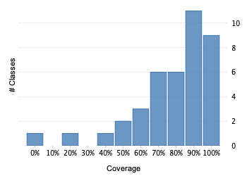

Project overview
Code coverage 46 classes, 1,613 / 2,170 elements
0.7433179674.3%
Test results 71 / 71 tests 1.13 secs
1.0100%
Code metrics
460
1,390
320
46
33
4
7,018
3,234
597
0.43
4.34
6.96
11.5
1.87
Class Coverage Distribution

Class Complexity

Coverage tree map
Generating Coverage Tree Map. Please wait...

Top 20 project risks
Most complex packages
| 1. | 0.7904656579% |
org.devacfr.maven.skins.reflow 222 |
| 2. | 0.6157718361.6% |
org.devacfr.maven.skins.reflow.model 174 |
| 3. | 0.777777877.8% |
org.devacfr.maven.skins.reflow.snippet 161 |
| 4. | 0.856060685.6% |
org.devacfr.maven.skins.reflow.context 40 |
Most complex classes
| 1. | 0.8434782684.3% |
HtmlTool 96 |
| 2. | 0.6695906567% |
SkinConfigTool 91 |
| 3. | 0.7476635674.8% |
Component 33 |
| 4. | 0.864583386.5% |
Context 26 |
| 5. | 0.904761990.5% |
SnippetContext 22 |